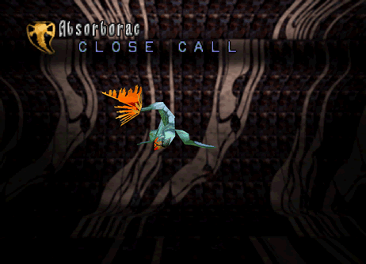

Mutants |
Mutant Hopper
|
Lucich
|
Strategy Azel was surrounded by mutants, I had to act fast in order to save her from harm. The two mutants to the left were taken out with my gun, and the last mutant on the right was finished off with the dragon's lock-on lasers. I could finally relax, Azel was safe. |


Absorborac  |
Strategy Once I had Azel back, I headed to B3F East. I encountered enemies that were very similar to the ones I fought when I was last here. Surprisingly, these ones had a giant bomb with them! I used my gun to shoot each individual one until their stalks shot up into the air. Then, I had Lagi shoot them all for an easy victory! |